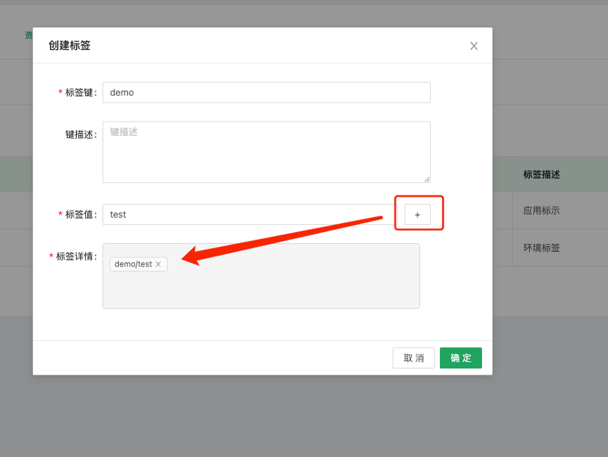
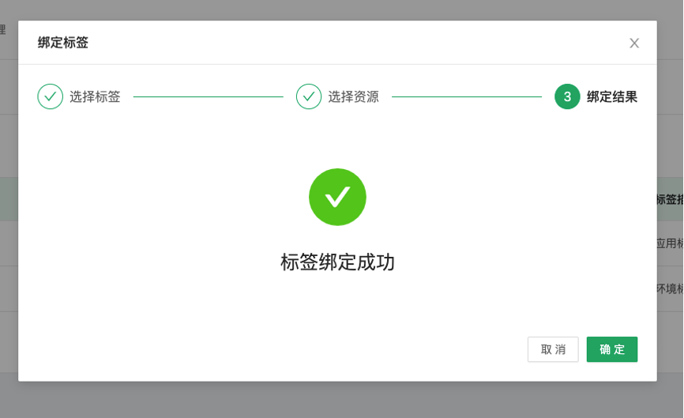
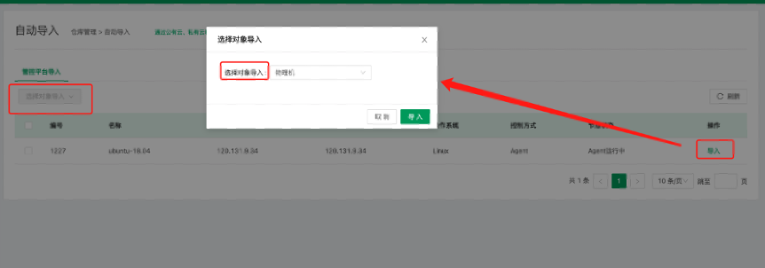
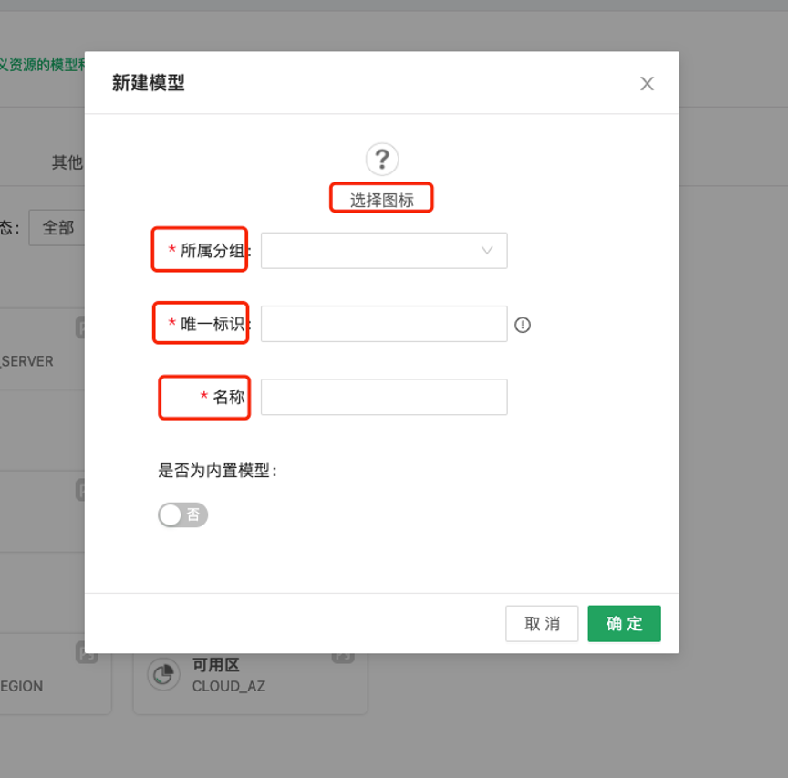
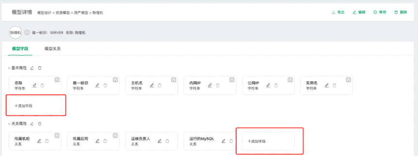
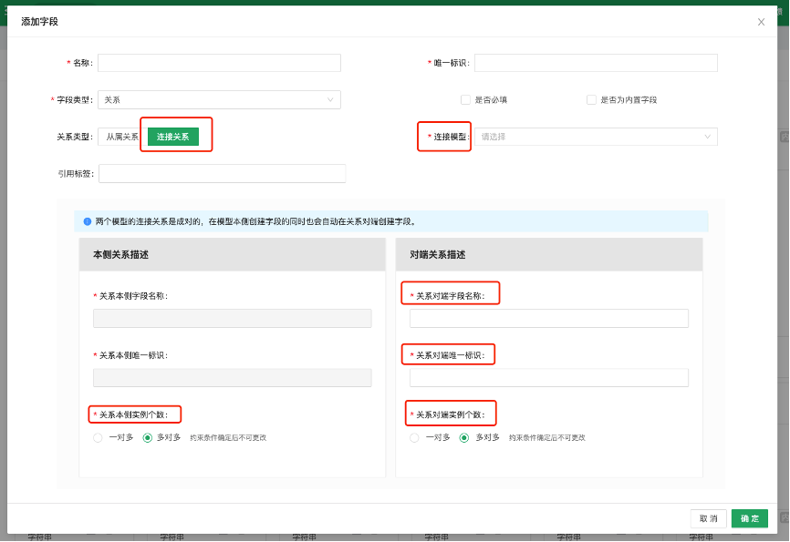
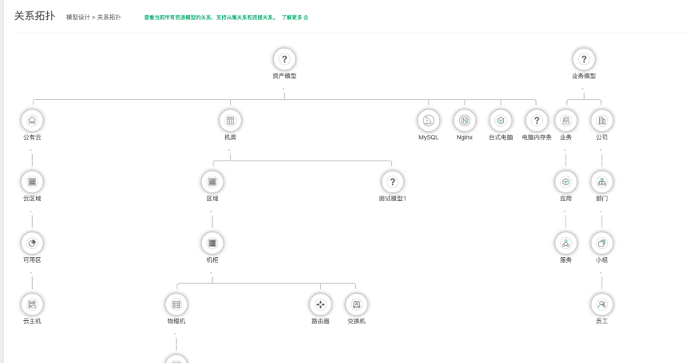

资源平台¶
在云原生时代首先面临的公有云、私有云和混合云场景下的多云管理，企业需要一个管理平台能够统一管理多云的IT资产，OpsAny资源平台就是为此服务的。资源平台可以支持阿里云、腾讯云、华为云等公有云通过API直接导入云资产，也支持从OpenStack、VMware等私有云进行快速资产导入并进行管理。资源平台通过资源仓库和资源模型两块相结合映射关系，可以把企业包含的所有资产管理起来，充分发挥整合的价值。

首页支持用户进行全文搜索，可以帮助用户通过关键字搜多CMDB已有资源。
视图展示¶
视图展示是资源平台进行主机查看和管理的核心，在业务应用架构以及类型逐渐复杂的今天，通过设计合适的模型，才能更有结构化管理好主机。
应用视图¶
应用是企业预定义的拓扑模型，通过分类展示不同应用下面的主机数据。

用户通过点击实例名可以查看每个主机的所有详情，包括基本属性、开放端口、关联资源信息、进程信息等等。
点击远程访问，可以登录目标主机的堡垒机。

主机IP：选择与当前网络匹配的网络IP。
端口：Linux 默认端口是22，Windows主机默认端口是3389。
访问协议：Linux默认协议是SSH访问协议，Windows默认协议是RDP访问协议。
用户名：Linux默认用户名是root，Windows默认用户名是Administrator。
验证方式：
密码：用户需要填写与目标主机匹配的密码。
密钥：用户可以选择与目标主机匹配的密钥。
主机视图¶
主机视图包括常用的云主机类型。

物理机、虚拟机：CMDB内置了机房、区域、机柜、物理机、虚拟机模型，通过资源仓库对这些私有云模型添加数据。
云主机：CMDB内置了公有云、云区域、可用区三个资源模型，公有云模型储存云账号信息，云管平台提供数据来源。
物理视图¶
物理视图主要关注点是主机类型中的物理机类型和虚拟机类型，同时包括一些配套的物理设备，物理设备一般依赖于机柜和机房的资源整合管理，那么物理视图就是以机房为最外层 维度，向内扩展的方式，为用户展示每个物理设备的详细信息，包括位置，使用情况等。

物理视图有三个内置的模型，机房模型、区域模型、机柜模型，这三种模型是系统内置的常用基础模型，用户可以自定义模型的使用场景，以满足企业的资源管理需求。

用户可以根据机柜内具体物理设备的摆放位置，进行机柜内部资源的管理，同时可以利用连接关系，对相关资源的查看和了解实际的使用情况。
仓库管理¶
仓库管理储存了CMDB所有的资产数据，储存分类是通过用户预定义资产模型，每一个仓库名称和资源模型的名称是一致的，方便用户查看和统计对应数据。
资源仓库¶

CMDB内置了三种资源分类，资产信息、业务信息、组织信息。
资产信息：主要包含企业IT资产和常用的办公用品数据仓库。
业务信息：主要包含企业预定义的一些常用业务、应用、服务数据。
组织信息：企业常用的人员分层模型：公司、部门、小组、员工。
以云主机资源仓库为例

数据展示列表支持用户导出和快捷导入数据。

点击右侧设置，用户可以根据使用场景自定义列表显示字段，字段排序根据右侧展示栏自上而下展示，列表处由左至右展示。

点击右侧查看详情，可以查看每条数据的详细信息。
资源详情：查看模型字段配置的关联数据，此处的字段来源是由模型字段配置。

关系详情：包含从属关系和连接关系，同时查看两种关系字段中相关连数据，也可以对相关实例数据进行增加和移除。
开放端口：展示当前实例中正在运行的端口信息。
资源关联：展示当前模型的关联数据模型图。

进程信息：展示当前主机实例中的所有进程信息。
标签管理¶
标签管理用于用户能够更加快捷的搜索到指定数据。
标签包含标签键和标签值，使用标签搜索是需要通过键值对进行搜索。

主要功能包括资源标签、标签搜索。
资源标签：包含标签的创建和绑定资源。
标签搜索：根据标签搜索已绑定标签的资源数据。
创建标签

标签键、标签值：支持输入中文和英文。

输入标签值和标签键之后点击加号，标签详情处会展示生成的标签。
标签绑定资源
第一步：选择标签键和标签值匹配生成标签。

第二步：用户选择需要绑定的资源，支持用户根据关键字搜索资源数据。

第三步：标签绑定资源成功。

标签使用场景举例
资源仓库中云主机模型数据标签使用，此处会展示当前资源绑定的标签。

点击此处编辑，弹出页面可以快速对现有资源进行标签的增加修改操作。

根据标签搜索资源内容，方便用户能够更快捷的找个指定资源信息。

资源类型：用户根据资源模型所设置的模型来设定搜索范围。
标签：用户需要同时选择标签键和标签值，自动会生成标签。
重置：会删除掉上面生成的标签，同时用户可以继续选择标签的键和值。
用户点击查找资源，在下面资源查找结果处会出现用户所选标签的资源信息。
自动导入¶
自动导入功能主要用于用户从管控平台中主机管理中-添加-自动添加的主机，如果主机在CMDB中没有资源信息，那么可以从这里把管控平台的主机自动添加至相关的资源仓库数据中。

点击左侧选择对象导入，支持进行多个主机同时进行导入。
点击右侧导入，进行资源模型对象的选择，比如，物理机、云主机、虚拟机。
模型设计¶
CMDB是基于模型构建而成，目前内置了应用、资源、组织三种常见资源模型，每一个资源模型下面分别罗列了不同的子模型。如果内置模型不能够满足，可以通过自定义模型构造出企业特有的CMDB平台。
资产模型：主要是指企业的所有资产，每个资产可以通过建立模型来管理，系统内置了常用的一些模型，比如物理机、虚拟机、云主机、机房、区域、机柜、公有云、云区域、可用区、路由器、交换机等。
应用模型：根据企业常用的业务规模划分可以分为三层，业务、应用、服务三种，企业可以通过建立对应的模型数据，管理企业的业务线。
组织模型：通常用来企业建立对应的人力资源模型，储存人员组织架构信息数据，方便用户管理。
资源模型¶
查看现有资源模型

左侧“主机”、“数据中心”、“公有云”、“网络设备”为当前模型下的分组，分组可以方面用户对模型进行管理。分组分为系统内置分组和用户自定义分组，内置分组不可以修改和删除。
新建分组
用户点击新建分组可以在当前模型下进行分组的增加。

唯一标识：用户可以自定义填写唯一标识，字段内容在当前模型下不能重复。
名称：用户可以自定义填写名称，方便用户进行信息标识。

用户可以点击新增、编辑和删除按钮对分组进行管理。
新建模型
默认根据名称字段生成唯一标识，用户也可自定义唯一标识。

选择图标：支持用户自定义模型的图标。
所属分组：选择模型分组，方便用户对模型进行管理。
名称：用户可以自定义名称。
唯一标识：默认根据用户的名称生成唯一标识，用户也可自定义唯一标识。
模型创建成功后可以在当前模型界面查看已经创建好的模型，点击模型编辑按钮，可以查看模型内置了两个字段分组，基本属性和关系属性。

模型支持删除和停用操作。
删除模型：在模型详情页面，可以通过右上角的“删除”功能完成删除当前模型，需要注意的是为了尽可能减少误删除情况，删除模型请求时会先确认当前对应的实例是否已经清空。
停用操作：如果当前模型暂时不启用，可以使用右上角的停用功能，与删除不同的是，禁用仅会隐藏模型的显示，数据会保留。

用户点击添加字段按钮对当前字段分组进行字段的添加。

添加基本字段

名称：用户可以根据实际场景需要对字段进行命名。
唯一标识：默认根据名称的内容进行自动生成英文字符，用户也可以自定义生成。
字段类型：主要包含字符串、整数、日期等常用的字段。
是否必填：用于用户在新建资源时对当前字段判定是否必须填写。
是否为内置字段：用于用户设置当前字段是否为模型的内置字段，内置字段不支持删除，只能进行编辑操作。
默认值：用于在创建当前资源数据可以默认生成字段的数据默认值。
检验规则：支持对当前的字段模型数据进行正则校验。比如常用的有手机号、邮箱等。
最小长度和最大长度：限制当前字段的数据信息能够填写的最大字节数和最小字节数。
用户提示：主要当前字段的一些提示内容，方便用户使用时起到提醒作用。
添加关系字段
关系字段包含两种关系类型，从属关系（比如物理机模型从属于机房模型），连接关系（比如主机模型与应用模型，可以建立双端的关系字段，主机模型侧可以建立所属应用字段，应用模型侧可以建立所使用主机字段）。
从属关系字段：每一个模型只能有一个父模型，所以再创建从属关系时，会提示是否覆盖之前的上级模型。

添加字段时字段类型选择关系类型，下方会出现选择关系类型选项，选择从属关系，选择一类父模型。
连接关系字段：每一个模型可以创建N个连接关系，在两个模型之间同样不限制连接关系的个数。

字段类型选择关系，关系类型选择连接关系，选择对应的连接模型。

名称：用户可以根据使用场景自定义填写。
唯一标识：根据名字字段自动填充内容。
关系对端字段名称：是指在连接关系的对端模型中创建相对应的字段，用户可以根据使用场景自定义填写内容。
关系对端唯一标识：根据关系对端字段名称自动填充内容。
关系拓扑¶
在现实的资源管理中，数据之间往往存在着一定的关系，建立模型是方便企业能够快速归类数据，建设数据之间的关系网络，关系拓扑主要用来展示数据模型之间是如何关联。

操作审计¶
操作审计主要记录用户操作资源模型和资源仓库过程中的操作历史，帮助用户查看和管理。